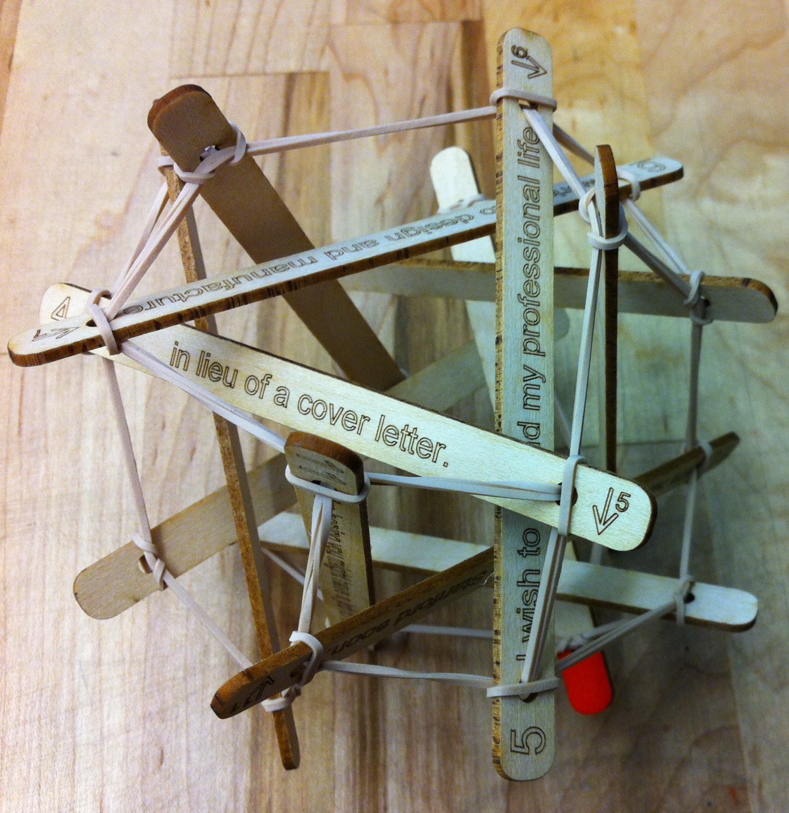

Tensegrity Toys and Construction Set
Inception
I had always been fascinated by the somewhat abstruse architectural concept of tensegrity -- in which structures are so arranged that certain compressive elements seem to float, suspended only by a network of thin, tensile elements. I had seen this design principle used in art pieces, bridges, and even a couple toys, and I wanted to explore it for myself.
But I didn't want to just study fancy math or spend dozens of hours in digital design. I wanted to build things with my hands -- things that were interesting to look at and handle. It quickly became obvious to me that there were no readily available construction sets on the market that could satisfy my desire. I would have to make the kit for myself.
Concept
A construction set, consisting of reusable "building block" units which can be used to make toy tensegrity structures in a wide variety of shapes.
Tools
|
Materials
|